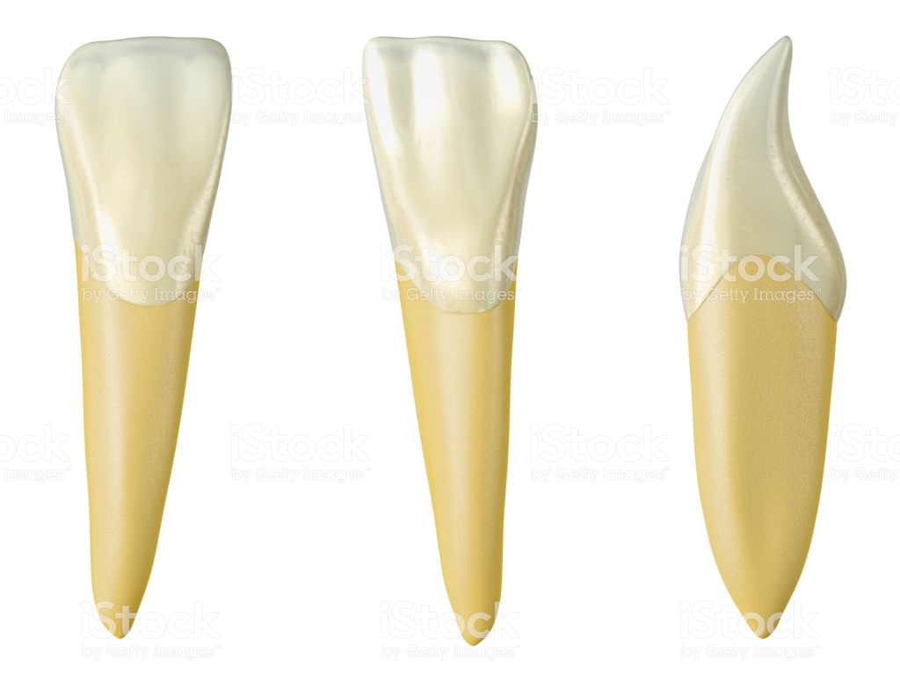
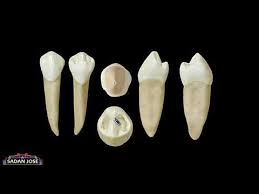

Su dimensión vestibulolingual siempre es mayor que la mesiodistal. Es parecido al canino superior pero con los rasgos anatómicos menos marcados. Es característico que el más largo.
Los dientes caninos están poco desarrollados en el hombre si los comparamos con otras especies animales. El ser humano posee cuatro dientes caninos, dos en la arcada superior y dos en la arcada inferior. Son considerados las "llaves de la oclusión dentaria". Cuando están en contacto los caninos inferiores con los superiores no hay oclusión entre los molares. Son los dientes que poseen las raíces más largas de la dentadura humana, llegando a medir hasta 17mm y creando una protuberancia en la maxilar, la zona adyacente a la protuberancia canina es conocida como fosa canina. Los caninos son los dientes que más tardan en salir en la dentición definitiva, produciéndose a veces apilamiento dental sin dejar espacio para los caninos. Son los dientes más estables de la dentadura humana. Su función principal es la de desgarrar los alimentos para que luego puedan ser triturados por los premolares y molares.
Las muelas del juicio, cordales o terceros molares son el tercer molar, que suele aparecer a las edades entre 18 y 25 años,1? pudiendo incluso no hacerlo nunca, aunque pueden aparecer en edades más tempranas o mucho más adelante. En algunas ocasiones no erupcionan las cuatro muelas, erupcionando solo algunas de ellas.
Se llaman muelas del juicio ya que a la edad en que aparecen las personas tienen un juicio más desarrollado y completo que cuando aparece el resto de la dentición definitiva.?
Existen cuatro muelas cordales, una por cada cuadrante bucal, y se sitúan en la última posición de la línea de la dentadura, al fondo de la boca. Las muelas del juicio suelen afectar a otros dientes al desarrollarse, empujándolos o saliendo "torcidos".
Su anatomía varía mucho, puede tener entre una y cuatro raíces y entre uno y seis conductos y puede tener conductos en forma de C. Puede estar significativamente inclinado en sentido distal y/o vestibular lo que crea un problema aún mayor para el acceso comparado con el segundo molar.3? Cuando esto ocurre se suelen extraer.
Es el diente más pequeño y simétrico de toda la dentición, tiene una corona trapezoidal o rectangular y una única raíz.
Sus contactos dentarios son:
-Proximales: contacta por mesial con el incisivo central contralateral y por distal con lateral de su mismo lado. -Oclusales: su borde incisal contacta con la cara palatina del incisivo central. -Superior. Es, junto con el tercer molar superior, el único diente que ocluye con un solo antagonista y no con dos. Tiene una raíz única que puede tener una ligera convexidad hacia vestibular y su dato más característico es que tiene un aplastamiento mesiodistal.
Es muy parecido al incisivo central inferior, ligeramente mayor que el anterior, y su porción distal del borde incisal es más redondeada, quitándole así la simetría del central. Tiene una única raíz aplanada en sentido mesiodistal que puede no tener surco en la cara mesial, pero que siempre existe en la cara distal. El tercio apical de la raíz se suele poseer una ligera desvicion hacia distal. Tiene la raíz ligeramente girada hacia lingual y distal. Sirven para sostener lo que se ingiere.

Están situados distalmente con respecto al canino inferior. No es raro encontrar agenesias (ausencias) o dientes supernumerarios. El primer premolar inferior tiene forma pentagonal desde una vista oclusal. Presenta dos cúspides: lingual y vestibular, ésta de mayor tamaño. Una característica diferencial de la cara oclusal del primer premolar inferior es que las crestas triangulares centrales vestibular y lingual cruzan ininterrumpidamente la cara oclusal, por lo que hablamos de una sola cresta, la cresta tranversa.
Sus contactos dentarios son: Proximales: el primer premolar inferior contacta por mesial con el canino inferior y por distal con el segundo premolar inferior. Oclusales: contacta con la vertiente distal del canino superior y con la vertiente mesial del primer premolar superior. Ambos premolares inferiores tienen un gran parecido aunque se encuentran las siguientes diferencias: La raíz del segundo premolar inferior es estrecha y es un poco angosta comparada con los demás premolares superiores, y es más larga que la del primer premolar inferior. Hay dos tipos de segundos premolares inferiores, uno con dos cúspides, una lingual y otra vestibular, y otro con 3 cúspides, dos linguales y una vestibular. La cúspide vestibular del segundo premolar inferior es menos puntiaguda que la del primer premolar inferior, estando las pendientes cuspúdeas menos inclinadas.

La corona del primer molar inferior es mas o menos trapezoidal, el lado oclusal es el mas grande. en posicion vertical, se observan las cinco cuspides. En la corona hay dos surcos de desarrollo se llaman surcos de desarrollo mesiovestibular y distovestibular . Las cuspides mesiovestibular, distovestibular y distal son relativamente planas. sus crestas son menos curvas que la de cualquier otro diente. La cuspide distal, que es pequeña, es mas puntiaguda que las vestibulares. la cuspide distal forma una parte muy reducida de la cara vestibular . la cresta cuspidea distal es muy redonda en sentido oclusal y es mas filosa que cualquiera de las cuspides vestibulares. La linea cervical del primer molar inferior suele tener contornos regulares, curva en sentido apical hacia la bifurcacion de las raices. La superficie vestibular de la corona es ligeramente convexa en su porcion cuspidea y presenta surcos de desarrollo entre las cuspides.